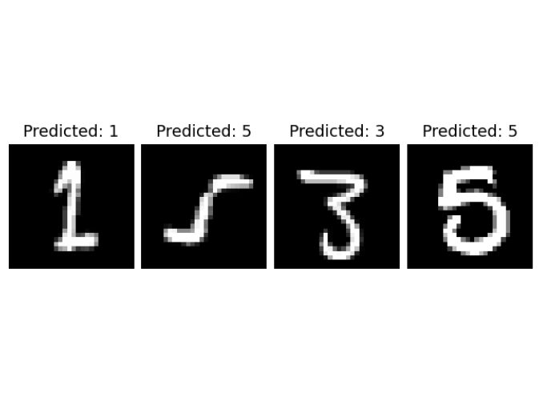

Short Course on R Tools
Integrate Python in R using Reticulate
Marquette University
SCoRT - Summer 2025
Outline
- Why integrate Python into R?
- What is
reticulate? - Installation & Setup
- Importing Python Modules into R
- Python Objects & Data Conversion
- Sourcing Python Scripts in R
- Accessing R Objects in Python
- Working with Python Classes in R
- reticulate in R Markdown & Quarto
Why integrate Python into R?
- Access powerful Python libraries:
- Deep Learning:
PyTorch,TensorFlow,Keras - Machine Learning:
scikit-learn,XGBoost,LightGBM - NLP:
spaCy,HuggingFace transformers - Computer Vision:
OpenCV
- Deep Learning:
- Combine the best of both worlds
- R: data manipulation, statistics, visualization (
ggplot2,dplyr) - Python: ML/AI, scripting, general programming
- R: data manipulation, statistics, visualization (
- Avoid rewriting code or switching environments
What is reticulate?
R package for interoperability with Python
Maintains a shared Python session accessible from R
Automatic conversion of many R types to Python and vice versa
Supports inline Python code in R Markdown and R scripts
Installation & Setup
🧩 Install the reticulate package in R
🐍 Ensure Python is installed
Use system Python, Anaconda, or a virtual environment. You can check the Python configuration in R:
🔗 Bind to a specific Python version
Importing Python Modules into R
📦 Use import() to bring Python modules into R
📦 Use import_builtins() to import Python built-in functions
Sourcing Python Scripts in R
- Use
source_python()orpy_run_file()to run.pyscripts from R - Use
py_run_string()to run inline Python code from R
📥 Using source_python()
Variables become directly available in the R global environment
🔍 Example:
Consider script.py file, includes following Python script:
📥 Using py_run_file()
Also runs the script, but…
- ❌ Does not expose functions/variables directly in R
- Variables and functions are stored in
py$
🧩 Using py_run_string()
- Executes the string in the shared Python session
- Variables created in Python are not added to R environment
- Access Python variables in R using
py$
Data Conversion & Accessing R Objects in Python
🔁 Automatic Data Conversion
| R Object Type | Python Equivalent | Notes |
|---|---|---|
numeric, integer |
float, int |
Scalars or arrays |
logical |
bool |
TRUE → True |
character |
str or list[str] |
Vectorized strings → list |
vector, matrix |
numpy.ndarray |
Shape preserved |
data.frame |
pandas.DataFrame |
Column types preserved |
list (named) |
dict |
Keys from names |
list (unnamed) |
list |
Sequential list |
NULL |
None |
|
function (closure) |
Python callable | If inputs/outputs are convertible |
function (builtin) |
❌ PyCapsule | ⚠️ not callable in Python |
S3/S4/R6 objects |
❌ PyCapsule | ⚠️ Not convertible |
Accessing R Objects from Python
🔍 Example:
Let two following objects have been defined in R global environment:
Exporting R Objects to Python
Use py$ assignment. In R:
Exporting R Closure Functions to Python
A closure in R is simply a user-defined function created with the function() keyword. It’s the most common type of function in R.
✅ A closure fnction Works directly. In R:
Exporting R Builtin Functions to Python
Built-in functions in R are functions implemented in C (compiled) and embedded directly into the R interpreter.
⚠️ Builtin function needs wrapping. For example:
🎥 Demo: Python from R in RStudio
Working with Python Classes in R
🧩 Create a Python class and use it in R
You can define a Python class (e.g., a neural network in PyTorch) and interact with it from R using reticulate.
🖥️ R Code to Load and Use the Python Class:
library(reticulate)
torch <- import("torch")
source_python("simple_net.py")
# Create model instance
model <- SimpleNet(5L)
# Create input tensor (2 samples, 5 features)
torch$manual_seed(42L)
x <- torch$randn(c(2L, 5L))
# Or:
# set.seed(42)
# x <- torch$tensor(matrix(rnorm(10),nrow=2),detype=torch$float32)
# Forward pass
output <- model(x)
print(output)💡 Example (Deep Learning)
Goal:
Use a pretrained Python CNN (PyTorch) in R to predict digits from MNIST test images.
Workflow:
Train CNN in Python → Save model weights.
Load model & preprocess in R using
reticulate.Predict & visualize results in R.
📂 Project Structure
🐍 Python: model.py
import torch.nn as nn
import torch.nn.functional as F
class SimpleCNN(nn.Module):
def __init__(self):
super(SimpleCNN, self).__init__()
self.conv1_layer = nn.Conv2d(1, 16, kernel_size=3, padding=1)
self.conv2_layer = nn.Conv2d(16, 32, kernel_size=3, padding=1)
self.fc1_layer = nn.Linear(32 * 7 * 7, 128)
self.fc2_layer = nn.Linear(128, 10)
def forward(self, inputs):
x = F.relu(self.conv1_layer(inputs))
x = F.max_pool2d(x, kernel_size=2, stride=2)
x = F.relu(self.conv2_layer(x))
x = F.max_pool2d(x, kernel_size=2, stride=2)
x = x.view(-1, 32 * 7 * 7)
x = F.relu(self.fc1_layer(x))
x = self.fc2_layer(x)
return xMNIST Dataset

🐍 Python: Training & Saving
import torch
import torch.nn as nn
import torch.optim as optim
import torchvision
import torchvision.transforms as transforms
from torch.utils.data import DataLoader
from model import SimpleCNN
device = torch.device("cuda" if torch.cuda.is_available() else "cpu")
data_transform = transforms.Compose([
transforms.ToTensor(),
transforms.Normalize((0.5,), (0.5,))
])
train_dataset = torchvision.datasets.MNIST(root='./data', train=True, transform=data_transform, download=False)
test_dataset = torchvision.datasets.MNIST(root='./data', train=False, transform=data_transform, download=False)
train_loader = DataLoader(train_dataset, batch_size=64, shuffle=True)
test_loader = DataLoader(test_dataset, batch_size=64, shuffle=False)
cnn_model = SimpleCNN().to(device)
loss_func = nn.CrossEntropyLoss()
optimizer = optim.Adam(cnn_model.parameters(), lr=0.001)
for epoch in range(5):
cnn_model.train()
running_loss = 0.0
for inputs, labels in train_loader:
inputs, labels = inputs.to(device), labels.to(device)
optimizer.zero_grad()
outputs = cnn_model(inputs)
loss = loss_func(outputs, labels)
loss.backward()
optimizer.step()
running_loss += loss.item()
print(f"Epoch {epoch+1}, Loss: {running_loss / len(train_loader):.4f}")
cnn_model.eval()
correct_predictions = 0
total_samples = 0
with torch.no_grad():
for inputs, labels in test_loader:
inputs, labels = inputs.to(device), labels.to(device)
outputs = cnn_model(inputs)
_, predicted_labels = torch.max(outputs, 1)
total_samples += labels.size(0)
correct_predictions += (predicted_labels == labels).sum().item()
accuracy = 100 * correct_predictions / total_samples
print(f"Accuracy of test set: {accuracy:.2f}%")
torch.save(cnn_model.state_dict(), 'cnn_model.pth')🔗 R: Load the Python Model
library(reticulate)
torch <- import("torch")
Image <- import("PIL.Image", convert = FALSE)
plt <- import("matplotlib.pyplot")
transforms <- import("torchvision.transforms", convert = TRUE)
os <- import("os")
source_python("model.py") # Loads SimpleCNN
device <- torch$device("cpu")
model <- SimpleCNN()$to(device)
model$load_state_dict(torch$load("cnn_model.pth", map_location = device))
model$eval()🖼 Preprocess & Predict in R
transform <- transforms$Compose(list(
transforms$Grayscale(),
transforms$Resize(tuple(28L, 28L)),
transforms$ToTensor(),
transforms$Normalize(tuple(0.5), tuple(0.5))
))
image_dir <- "test_images"
image_files <- sort(Filter(function(f) endsWith(f, ".png"), os$listdir(image_dir)))
plt$figure(figsize = tuple(10, 3))
with(torch$no_grad(), {
for (idx in seq_along(image_files)) {
image <- Image$open(file.path(image_dir, image_files[[idx]]))
input_tensor <- transform(image)$unsqueeze(0L)$to(device)
output <- model(input_tensor)
predicted_label <- torch$argmax(output, dim = 1L)$item()
plt$subplot(1L, length(image_files), idx)
plt$imshow(image$convert("L"), cmap = "gray")
plt$title(sprintf("Predicted: %s", predicted_label))
plt$axis("off")
}
})
plt$tight_layout()
plt$show()Prediction plot
reticulate in R Markdown & Quarto
- Chunk engines:
{python},{python3} - Return to R:
- Quarto YAML:
Shiny & Python Integration
🧬 Run Python code dynamically inside a Shiny app using reticulate
library(shiny)
library(reticulate)
ui <- fluidPage(
actionButton("btn", "Compute in Python"),
verbatimTextOutput("out")
)
server <- function(input, output) {
observeEvent(input$btn, {
# Run Python code when button is clicked
py_run_string("import math; res = math.factorial(10)")
output$out <- renderText(py$res)
})
}
shinyApp(ui, server)Resources & Further Reading
- reticulate docs: https://rstudio.github.io/reticulate/
- Tutorials: RStudio blog posts
- Community: RStudio Community forums
🙏 Thank you!
Questions & Discussion